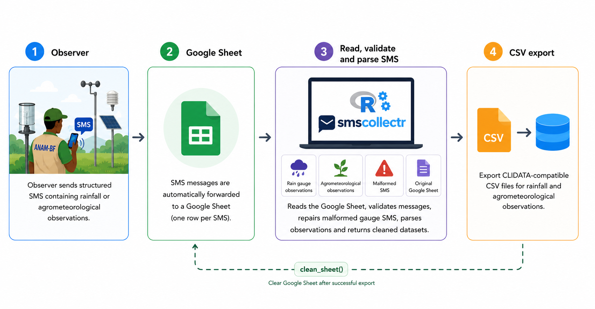

smscollectr is an R package designed for the collection, parsing, and export of meteorological observations transmitted via SMS. It is built for operational use within ANAM-BF (Agence Nationale de la Météorologie du Burkina Faso), where field observers send daily measurements as structured text messages to a central Google Sheet.
Scope notice
This package is purpose-built for a specific operational context at ANAM-BF: fixed SMS formats, a CLIDATA-compatible output schema, and a Google Sheets-based collection pipeline. It is not a general-purpose SMS parsing library. That said, the core functions are deliberately modular and can serve as a starting point for adaptation to other networks, SMS formats, or database targets with minimal effort.
How it works

Two SMS formats are supported and automatically detected:
-
Format Gauge — rain gauge observations
-
Format Agro — agrometeorological station observations
parse_sms() returns a named list of two tibbles, one for each SMS format, making it straightforward to export each dataset separately for CLIDATA.
Processing workflow
Field observers send structured SMS messages to a shared phone number.
Messages are automatically forwarded to a Google Sheet.
-
- downloads the sheet,
- validates SMS messages,
- repairs malformed gauge messages using
fix_sms(), - parses all valid observations.
-
The function returns:
$gauge$agro$bad$raw
write_csv()exports CLIDATA-compatible CSV files.clean_sheet()clears the Google Sheet after a successful import.
Installation
# install.packages("pak")
pak::pak("oousmane/smscollectr",
auth_token = "ghp_xxxxxxxxxxxx")Initial setup (run once per machine)
Two items must be configured only once:
- Google Sheets authentication
- Google Sheet URL
Both are securely stored in the system credential store.
1. Google Sheets authentication
Service account (recommended)
Suitable for production servers and automated workflows.
library(smscollectr)
config_auth("path/to/service-account.json")The Google Sheet must be shared with the service account email contained in the JSON file.
After configuration, authentication is completely automatic.
No call to sms_auth() is required.
OAuth (interactive)
For desktop use.
sms_auth(email = "you@gmail.com")A service account never expires and requires no browser interaction, making it the preferred option for operational deployments.
2. Store the Google Sheet URL
set_sheet_url(
"https://docs.google.com/spreadsheets/d/SHEET_ID/edit"
)The URL is stored securely in the operating system keyring.
Retrieve it anywhere using
Quick start
library(smscollectr)
result <- read_sms(
sheet_url = get_sheet_url()
)
result$gauge
result$agro
result$bad
result$raw
readr::write_csv(
result$gauge,
"export_gauge.csv",
na = ""
)
readr::write_csv(
result$agro,
"export_agro.csv",
na = ""
)
clean_sheet(
url = get_sheet_url()
)SMS formats
Format Gauge (Rain gauge)
| Field | Description | Example |
|---|---|---|
| XXXXXXY | 6-digit station ID + type code (P, S, A, C) |
200001S |
| DD-MM-YYYY | Observation date | 03-06-2026 |
| ZZZ | Rainfall in tenths of mm, TR, or pas de pluie
|
125 |
Format Agro (Agrometeorological station)
STATION-NAME
DD-MM-YYYY
Tn=305
Tx=438
TnSol=305
TxSol=525
T-10=423
T-20=406
T-50=386
Un=15
Ux=54
Vent=03
Inso=111
e=211
BAC=154
PICHE=192
RA=NT| Section | Description |
|---|---|
| Line 1 | Station name |
| Line 2 | Observation date |
| Lines 3–17 | Fifteen key=value observations |
Special values
| Value | Meaning |
|---|---|
TR |
Trace rainfall (flag="T") |
NT |
Not measured |
xx / xxx
|
Missing value (flag="M") |
Output
read_sms() returns a named list containing four objects.
$gauge
| Column | Description |
|---|---|
| eg_gh_id | Station identifier |
| year | Year |
| month | Month |
| day | Day |
| time | Always "06:00"
|
| eg_el_abbreviation | Always "RR"
|
| value | Rainfall (mm) |
| flag |
"T" for trace |
$agro
One row per observed variable.
| Column | Description |
|---|---|
| eg_gh_id | Station identifier |
| year | Year |
| month | Month |
| day | Day |
| time | Always "06:00"
|
| eg_el_abbreviation | CLIDATA element code |
| value | Physical value |
| flag |
"T", "M" or NA
|
Security
Sensitive information is stored using the keyring package and never written to plain text files.
| Secret | Function | Frequency |
|---|---|---|
| Google Sheet URL |
set_sheet_url() / get_sheet_url()
|
Once |
| Service account | config_auth() |
Once |
| OAuth token | sms_auth() |
Managed automatically |
Functions
| Function | Description |
|---|---|
config_auth() |
Configure service account credentials |
sms_auth() |
OAuth authentication |
set_sheet_url() |
Store Google Sheet URL |
get_sheet_url() |
Retrieve Google Sheet URL |
is_gauge_sms() |
Detect gauge SMS |
is_agro_sms() |
Detect agro SMS |
is_bad_sms() |
Detect malformed SMS |
is_no_rain() |
Detect “no rainfall” messages |
fix_sms() |
Repair malformed gauge SMS |
parse_sms() |
Parse SMS messages |
read_sms() |
Read, repair and parse a Google Sheet |
clean_sheet() |
Remove all data rows while preserving headers |
to_station_id() |
Convert station name to CLIDATA ID |
to_element_id() |
Convert variable name to CLIDATA element code |